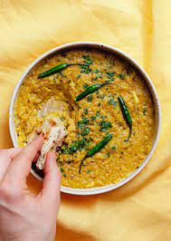

Pakistani cuisine may seem meat heavy but there are plenty of great vegetarian options. The word “tarka” refers to the process used when finishing off a lentil dish, so in essence tarka daal can be made with a number of different daals. When the lentils are thoroughly cooked, the tarka is applied – onions, cumin seeds and crushed garlic cloves are fried until brown in a separate pan and added to the daal without stirring. It should make a sizzling sound as the tarka mixture hits the lentils.
